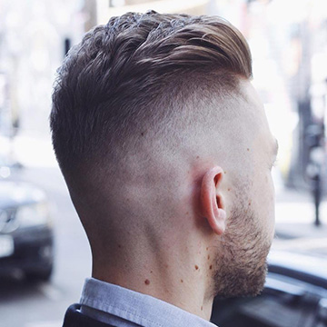
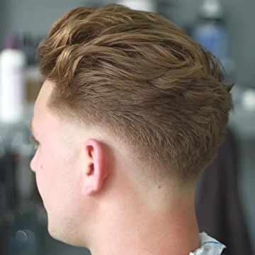
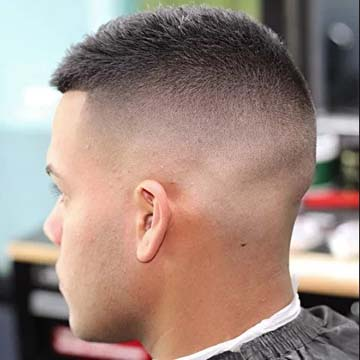
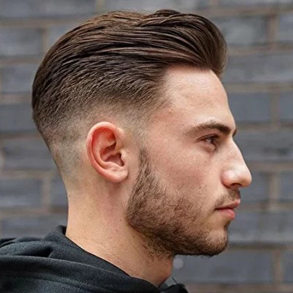
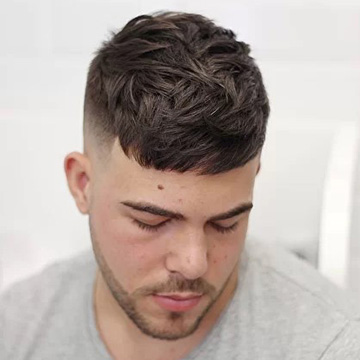
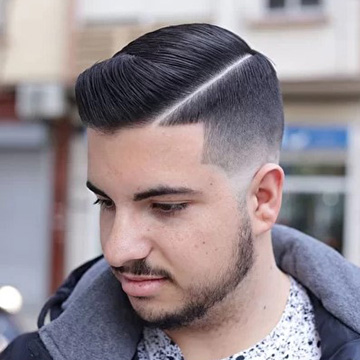
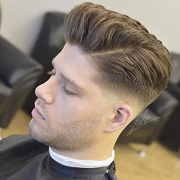
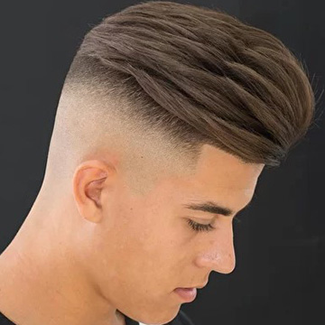
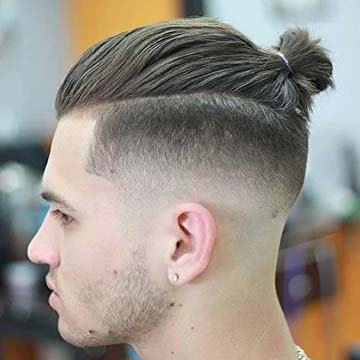

Чем отличаются стрижки которые стригут в барбершопах?

Придя в первый, а может и не в первый раз в барбершоп, клиенту не всегда получается легко ориентироваться в многообразии современных стрижек, техник и профессиональной терминологии которой пестрят сайты и журналы с современными стрижками.
Мы не так давно ушли от устаревших «канадок», «теннисов», «полубоксов» - а тут целый ворох новых названий пришедших с запада, в которых и мастерам не просто разобраться сразу.
Чтобы упростить процесс выбора стрижки (и общения с парикмахером), мы решили краткий ликбез по популярным в барбершопах стрижках и техниках.
Fade (Фэйд)

Фэйд - самая распространённая стрижка, которая вызывает больше всего вопросов. Фэйд, даже не столько стрижка, сколько техника стрижки которая позволяет добиться «Дымчатого» перехода от большей длины к меньшей. В зависимости от формы лица, стрижки и нужного результата, барбер может стричь разные варианты фэйда. Типов фэйдов мы знаем более тридцати, но в обиходе используются три основных, про которые мы и расскажем далее.
Low fade

Менее контрастный вариант, где линия угасания находится ближе к линии роста волос. Отлично подходит для удлиненных стрижек и мужчин, которые любят классику.
High fade

В противоположность предыдущему – отличается ярким контрастом между короткой длинной на висках и затылке и длинным волосом наверху.
Mid fade

Высота перехода в среднем фэйде находится между двумя предыдущими.
Crop (Кроп)

Стрижка когда то популярная в начале 19го века, благодаря своей простоте выполнения. Удлиненная зона макушки и коротко остриженные виски и затылок. Подобный вариант можно увидеть в сериале «Острые козырьки». Сейчас одна из самых популярных и модных стрижек 17-18 года. Характерна четкой, остриженной (French crop – удлиненной) челкой и объёмной, текстурной макушкой. Височные зоны и затылок стригут в технике фэйд.
Quiff (Кок)
Текстурная стрижка с удлиненной, уложенной вверх челкой. Во всём мире считается классикой. Но придется постараться чтобы её правильно уложить.
Comb Over

Чаще мы говорим об этой стрижке как "с пробором". Перевести можно как "гребень". Вычесанные на пробор волосы, уложенные в одну сторону. Сочетаются абсолютно с разными длинами на височных зонах. Может быть и фэйд, может и длина на пальцах.
Pompadour (Помпадур)

Стрижка, прародителем которой является никто иной, как Элвис Пресли. Длинная, уложенная назад челка. Виски могут быть разной длинны, но важное условие – мягкий переход с длины верха к височно-боковым зонам.
Undercut (Андеркат)

Стрижка, в которой все волосы верхней зоны длинные и не сведены с височно-боковыми, образуя яркий контраст.
Top Knot (Высокий узел)

Тот же андеркат, но волосы сверху собраны в узел.
Контакты
где мы?
-

Адрес
г.Брест, ул. 28 Июля 37а
-

Телефон
+375 29 223-05-68
-

E-Mail
info@andreipalych.by